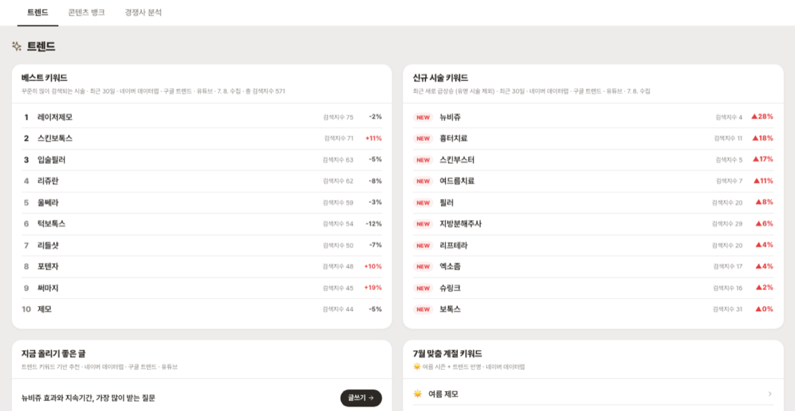
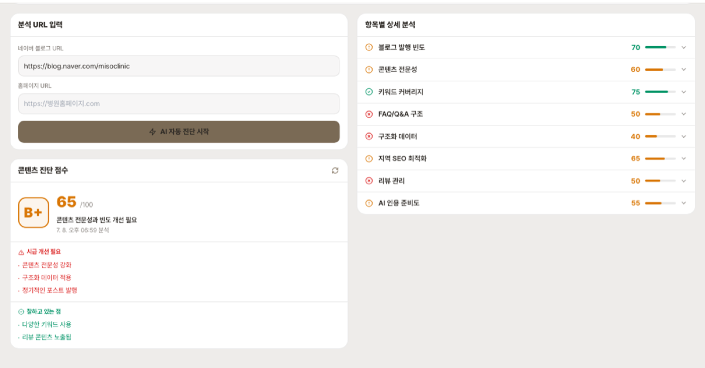
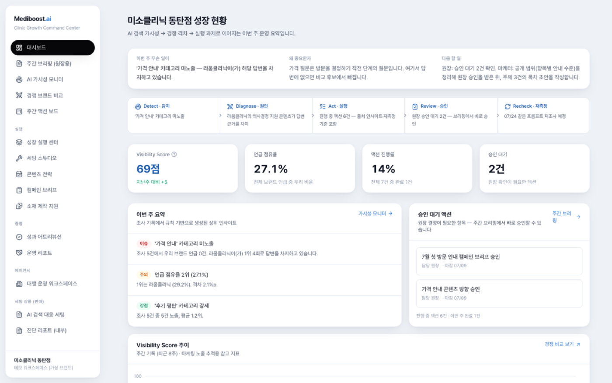
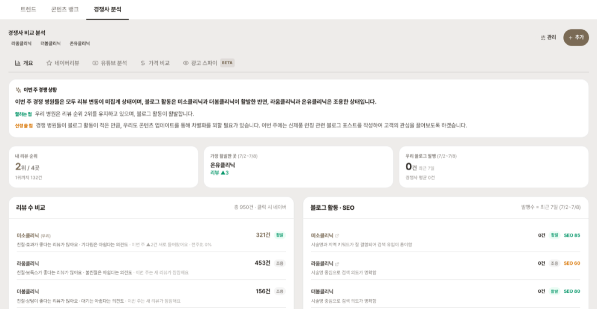
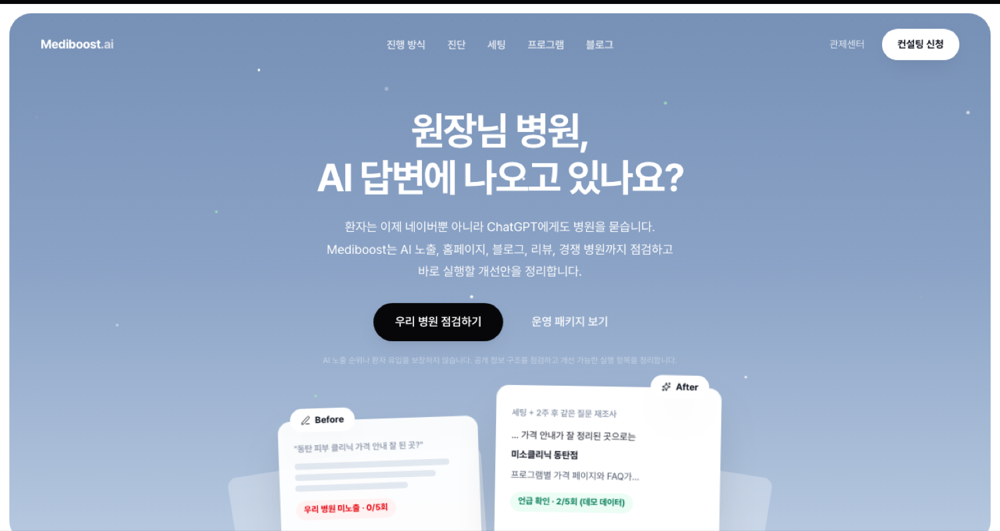

AI 검색 시대의
병원 마케팅
대행사 고르는 법 · SEO·GEO의 기준 · 앞으로의 마케팅. 아무도 정리해 주지 않던 것을 데이터 관점에서 정리합니다.

- 前 아마존웹서비스(AWS) Business Analyst
- Tableau Visionary 2026 (국내 최초) · 데이터 시각화 전문가
- 기업·기관 교육: 현대자동차그룹 · KT · 하나은행 · CJ그룹 · 성균관대 · 경찰청
- 現 데이터 관점으로 병원 온라인 마케팅(Mediboost) 운영·연구
마케터가 아니라 데이터 다루던 사람입니다. 병원 마케팅을 숫자로 뜯어봤더니, 원장님이 판단할 근거가 유독 없는 시장이더군요. 오늘은 그 판단 기준을 공유합니다.
- 01 검색 환경의 변화와 AI 현황·원리
- 02 대행사 거르는 법 배경·계약·표현·법
- 03 좋은 업체·좋은 마케팅의 기준 체크리스트·측정
- 04 앞으로 무엇을, 어떻게 실행·로드맵
지금, 환자는 이렇게 움직입니다
직접 확인한 데이터와 시장 흐름을 정리했습니다.
대행사
거르는 법
시장이 어떤지 보고 → 무엇을 조심할지 확인하고 → 어떤 기준으로 고를지 정리합니다.
대행사, 이 순서로 판단합니다
개별 업체를 하나씩 따지기 전에, 판단의 큰 흐름을 먼저 봅니다.
지금 병원 마케팅 시장은
검색하면 이런 광고가 먼저 나옵니다. 간판과 가격만으로는 좋은 곳과 문제 있는 곳이 구분되지 않습니다.
초보도 월 300”
월 33만원”
확정 노출”
그래서 세 가지를 봅니다 — 누가 쓰는지(담당자), 무엇에 서명하는지(계약서), 그리고 어떤 기준으로 고를지.
글을 실제로 쓰는 사람은 누구인가
진입장벽이 낮아 ‘재택부업’ 인력까지 유입되는 시장입니다. 회사 간판이 아니라 실제 작업자의 경력이 결과물의 품질을 사실상 결정합니다. 그래서 다음을 확인합니다.
- 이전에 어느 회사에서 뭘 하던 사람인가 — 경력·직무를 실명으로 밝히는지
- 본인이 직접 키운 계정·성과가 있나 — 남의 사례 말고
- 포트폴리오가 실명·검증 가능한가 — “비밀유지”로 안 보여주면 의심
- 계약 후 담당자가 고정인가 — 외주·재외주로 굴러가지 않는지
대부분의 계약서엔, 이런 조항이 들어갑니다
문제는 대행을 맡기는 것 자체가 아니라, 원장에게 불리한 조항이 계약서에 ‘기본값’으로 들어가 있다는 점입니다.
계약이 끝나면, 그동안 쌓은 글·계정·순위가 원장에게 하나도 남지 않을 수 있습니다.
그럼, 어떤 대행사를 골라야 하나?
- ✕“노출·순위 보장합니다”
- ✕글 작성자를 안 밝힘
- ✕성과를 안 재고 “늘었다”만
- ✕의료광고법을 모름
- ✓실명·출처를 밝히고 씀
- ✓측정하고 결과를 리포트로 줌
- ✓의료광고법에 맞춰 표현 정제
- ✓“보장 안 합니다”라고 정직하게
왜 지금 GEO인가
· 글의 구조
잘 쓴 글이 AI에 인용되는 원리를, 한 조각씩.
SEO와 GEO의 차이
- 목표 : 검색 결과 ‘순위’
- 대상 : 네이버·구글 검색
- 지표 : 키워드 순위·클릭률
- 목표 : AI 답변 속 ‘인용’
- 대상 : 챗GPT·퍼플렉시티
- 지표 : 언급 점유율·인용 수
대체 관계가 아니라 병행해야 하는 별개 영역입니다.
① 환자가 실제 묻는 질문을 제목으로
- 1환자의 질문을 그대로 제목으로
- 2실명·전문성 · 누가 썼는지
- 3질문 바로 아래 한 문장 결론
- 4진료 경험·근거로 뒷받침
- 5구조화 데이터 · 기계가 읽는 표시
AI는 ‘질문’에 답합니다. 제목이 곧 환자의 질문이면 매칭됩니다.
② 누가 썼는지 · 실명과 전문성
- 1환자의 질문을 그대로 제목으로
- 2실명·전문성 · 누가 썼는지
- 3질문 바로 아래 한 문장 결론
- 4진료 경험·근거로 뒷받침
- 5구조화 데이터 · 기계가 읽는 표시
익명 블로그와 실명 전문의 글은, AI가 신뢰도를 다르게 봅니다. (E-E-A-T)
③ 질문 바로 아래, 한 문장 결론
- 1환자의 질문을 그대로 제목으로
- 2실명·전문성 · 누가 썼는지
- 3질문 바로 아래 한 문장 결론
- 4진료 경험·근거로 뒷받침
- 5구조화 데이터 · 기계가 읽는 표시
AI는 첫 두세 문장을 답으로 뽑습니다. 결론을 맨 앞에 둡니다.
④ 진료 경험으로 근거를 댄다
- 1환자의 질문을 그대로 제목으로
- 2실명·전문성 · 누가 썼는지
- 3질문 바로 아래 한 문장 결론
- 4진료 경험·근거로 뒷받침
- 5구조화 데이터 · 기계가 읽는 표시
경험·수치·사례가 들어간 글을 AI가 더 신뢰합니다. (Experience)
⑤ 기계가 읽도록 구조화 데이터
- 1환자의 질문을 그대로 제목으로
- 2실명·전문성 · 누가 썼는지
- 3질문 바로 아래 한 문장 결론
- 4진료 경험·근거로 뒷받침
- 5구조화 데이터 · 기계가 읽는 표시
사람 눈에는 안 보이지만, AI가 ‘이건 신뢰할 답’이라고 인식하는 표식입니다.
우리 병원 노출, 직접 점검 3단계
- “(우리 진료) 추천해줘”
- 우리 병원이 언급되나
- “(우리 병원) 어떤 곳이야?”
- 틀린·옛 정보는 없나
- 같은 질문에 경쟁 병원은?
- 걔넨 1위, 우린 없다 → 격차
복잡한 도구 없이 10분이면 원장님 혼자 확인할 수 있습니다.
AI가 인용하는
병원이 되려면
특정 도구가 아니라, 병원이 밟아야 할 준비 순서를 정리합니다.
한 장으로 보는, 준비 순서
특정 업체·도구 이야기가 아니라, 어느 병원이든 밟아야 할 일반적인 순서입니다.
노출·순위를 ‘보장’하는 단계는 없습니다. 신뢰를 쌓아 자연스럽게 인용되게 만드는 과정입니다.
아임웹 사이트는 ChatGPT가 못 읽습니다
- 아임웹은 수만 고객사가 공유하는 SaaS(CDN·WAF). ChatGPT·OpenAI 봇을 플랫폼 전체에서 차단
- 차단 대상 : OpenAI 계열 봇 GPTBot ChatGPT-User
- 차단 방식 : WAF(웹 방화벽)에서 즉시 403 반환 · 2024년 8월부터 공식 보안 정책
| 플랫폼 | AI 봇 차단 방식 |
|---|---|
| 네이버·카카오 | 전체 크롤러 기본 차단, 지정 검색엔진만 허용 |
| 쿠팡 | WAF에서 robots.txt 요청 자체를 차단 |
| 배민 | 전체 차단 후 Googlebot·Yeti만 허용 |
그래서, GPT가 읽는 곳으로 옮깁니다
홈페이지를 갈아엎지 않아도 됩니다. 아임웹은 그대로 두고, 실명 칼럼만 GPT가 읽을 수 있는 사이트로.
원장님이 할 것 : 없음 (홈페이지 유지) · 우리가 할 것 : 실명 칼럼을 GPT가 읽는 GEO 사이트로 이전·최적화
지금 뜨는 질문·
시술 키워드
환자가 요즘 검색·질문하는 키워드와 신규 시술을 매주 정리합니다. 어떤 글을 쓸지 감이 아니라 데이터로 정합니다.
우리가 대신 — 수집·선별·발행

우리 병원, AI에
나오는지 진단
질문별로 우리 병원이 AI 답변에 나오는지, 어디가 비어 있는지 점수로 봅니다.
우리가 대신 — 진단·리포트데이터 기반
성과 관리
- ·노출되는 질문의 수
- ·몇 번째로 언급·경쟁 대비
- ·실행 전과 후를 같은 기준으로 비교
실제 제품 화면 · 수치는 예시(데모 계정)


경쟁 병원
비교
리뷰 수·블로그 활동·검색/AI 노출을 경쟁 병원과 같은 기준으로 정리합니다. 어디를 따라잡을지 보입니다.
실제 제품 화면 · 수치는 예시
AI 답변에 우리 병원이 ‘출처’로
환자가 AI에게 물으면, 실명 칼럼이 답변의 근거로 인용됩니다. 광고가 아니라 정보라서 인용됩니다.
예시 화면입니다. 실제 인용은 질문·시점에 따라 달라지며 보장되지 않습니다.
원장님이 직접 vs 우리가 대신
- 챗GPT에 우리 병원 직접 물어보기
- 진료실 단골 질문 5개 적어두기
- 네이버 플레이스·구글 비즈니스 최신화
- 대행 계약서 소유권·해지 조건 확인
- 실명 칼럼 작성 + GPT 읽는 사이트로 이전
- 아임웹 홈페이지 구조 정비
- 데이터 분석·시각화 · 리뷰·SNS 관리
- 경쟁 모니터링 · 전·후 리포트
실명·실제 경험
광고가 아니라 개인의 기록이라 신뢰가 형성됨
실제 질문에 답함
사람들이 궁금해하던 지점을 구체적으로 다룸
정보처럼 읽힘
광고 형식이 아니어서 공유·저장으로 확산
광고량을 늘리는 대신, 정보성 콘텐츠를 꾸준히 쌓는 방식이 유효했습니다.
실질적으로 도움이 되는 마케팅
블로그 콘텐츠
환자가 검색·질문하는 주제를 실명·근거로 작성
홈페이지 정비
아임웹 등 — 검색·AI가 함께 읽도록 구조 손봄
데이터 분석·시각화
유입 경로·이탈 지점을 숫자로 확인
리뷰·SNS 관리
달린 리뷰 응대와 채널 콘텐츠 운영
AI 검색 대응
GEO — 위 활동의 일부로 함께 다룸
90일 실행 우선순위
- AI 노출 직접 점검
- 홈페이지 구조 체크
- 빠진 질문 목록화
- 구조화·FAQ·llms.txt
- 플레이스·프로필 최신화
- 실명 저자 세팅
- 질문형 콘텐츠 발행
- 리뷰 응대·평판 관리
- 전·후 비교 확인
한 번에 다 하지 말고, 진단 → 기반 → 운영 순서로.
- 대행사는 간판이 아니라 담당자 배경·계약서·표현으로 거른다
- 좋은 업체는 실명·근거로 쓰고, 성과를 측정해 보여주며, 보장하지 않는다
- 광고량보다 정보성 콘텐츠의 축적이 반응을 만든다
- 검색·SNS·AI를 함께 — 실명·구조화가 인용과 신뢰를 만든다
Mediboost
블로그 콘텐츠 대행 · 아임웹 홈페이지 GEO 최적화 · 데이터 분석·시각화 · 리뷰·SNS 관리.
실명·근거 기반으로 운영합니다. 오늘 내용은 고객이 아니어도 그대로 쓰실 수 있게 정리했습니다.
노출·순위·환자 유입은 보장하지 않습니다. 현재 상태를 조사하고 실행합니다.

대행사를 고르지 말고,
거르세요.
질문 받습니다. 오늘 자료(체크리스트)는 QR·링크로 공유드립니다.